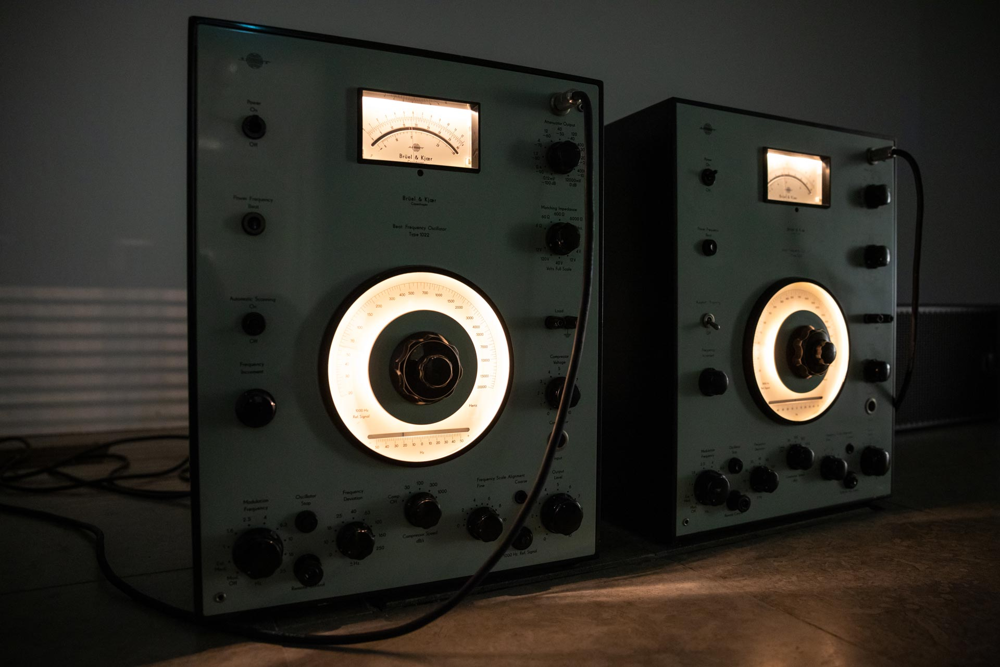
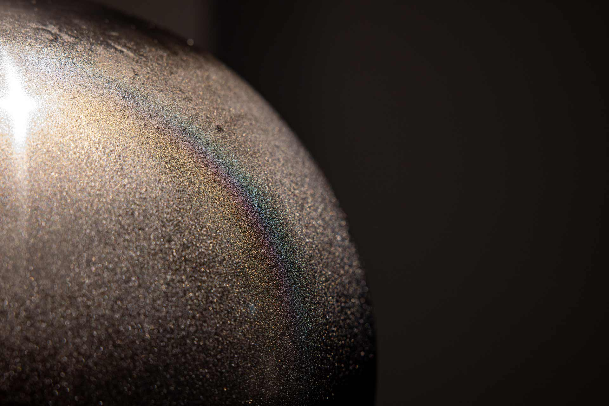

Aboa Vetus Ars Nova, Turku
2025
Ristinolla (2025)
Glass balls, LED lights, controller, power supply, stand
100x30x30 cm
A random generator switches on three white led-lights at a time. If all the lights are in one line, their
color turns red. The lights are projected to the ceiling above through glass balls which function as lenses.
Turku Beat Frequency (2025)
Analogue sine-wave oscillators, subwoofers
Dimensions variable
Two beat frequency oscillators playing slightly different 50-60 Hz sine wave tones. The two sine waves
interact in the space, creating a third so called interference sound. In certain spots, the sound is louder
than elsewhere in the space, due to standing sound waves formed by reflected sound waves travelling to
opposite directions.

Lines (2023)
Serigraphy print, oak frame
82,5x89 cm
3° / 4° (2023)
Serigraphy print, oak frame
65,2x65,2x4,5 cm
Employing two thin sheets of Plexiglas with a grid of small holes, the work creates a moiré effect. Using
simple means and employing the physical properties of natural phenomena, the work creates a captivating yet
subtle visual impression.
Spheres Tomography (2023)
Perforated Plexiglas
22x22x22 cm
In Spheres Tomography interlocking spheres were created inside a layered cubic volume by removing material.
The work appears very different when looked at from different angles.

Frozen Sphere (2023)
Stainless steel, refridgerant gel, freezer, plinth
Sphere: 26 cm, pilth: 30x30x90 cm
A stainless-steel container in the shape of a sphere is filled with freezing gel. It is then kept in a freezer
overnight and displayed on a pedestal during the day, when the exhibition is open. The moisture in the air of
the exhibition space condenses onto the cold surface of the artwork. Because it is highly polished, and hence
hydrophobic, the water tends to condense on it in droplets. The surface of the work, which is otherwise
reminiscent of a minimalist sculpture, is in a constant state of slow transformation, first freezing and then
melting.

Two Views (2022)
LED screen, tablet, surveillance camera application
110x30x30 cm (plinth)
The work plays on the physical properties of light, its transmission and perception. While the LED screen
seems to produce a steady glow of white illumination, the ipad--because of the nature of its technological
transformation of light waves into digital information--reproduces this sight as a pattern of white and black
horizontal bars. That is, the tablet camera filming the LED panel records as horizontal “interfering” lines
across the image what a human eye does not see: the intermittent waves constituting the LED light. Comparable
to the horizontal lines produced when filming analogue television sets, the work uses a technological glitch
to highlight the nature of light and its transformation by various technological means, as well as the
limitations of human perception.

Falling Water (2020)
Glass tube, stainless steel stand, plastic, tube, peristaltic pump with stepper motor, silicone oil,
distilled water
192x38x38 cm
Falling Water consists of a vertical glass tube, one third of which is filled with distilled water and two
thirds with silicone oil. The water on the bottom is pumped up by means of a small digitally controlled pump
and falls down through the silicone oil as small droplets. Employing relatively simple but sophisticated
means, using magnetism, electric currents, or simple gravitational forces, Tommi Grönlund and Petteri Nisunen
create quietly evocative and formally striking works.Falling Water consists of a vertical glass tube, one
third of which is filled with distilled water and two thirds with silicone oil. The water on the bottom is
pumped up by means of a small digitally controlled pump and falls down through the silicone oil as small
droplets. Employing relatively simple but sophisticated means, using magnetism, electric currents, or simple
gravitational forces, Tommi Grönlund and Petteri Nisunen create quietly evocative and formally striking works.
Restless Horizon (2016)
Acrylic aquarium, distilled water, silicone oil, aluminium stand, bearings, attachments, electric actuator,
limit-switches, control units, power source
240x85x24 cm
A large acrylic aquarium is filled to the brim with half distilled water and half transparent silicone oil.
Because silicone oil is less dense than water and they are immiscible, the oil floats on top of the water with
a transparent, but clearly visible borderline between them. An electric actuator operated by limit switches
and a control unit slowly tilts the aquarium back and forth, creating visible wave patterns at the boundary
between the two liquids. The high viscosity of the oil makes the movement of the waves slow and dreamlike.

Color Mixer (2016)
Programmed LED-projectors, powder coated steel, sand-blasted glass
2210x140x50 cm


Eclipse (2007)
Video projector, round mirror, wire, electric motor with reduction gear
Dimensions variable
Eclipse consists of a round dvd-projection resembling "Moon" and a round mirror suspended from the
ceiling in front of the beam. The slowly rotating mirror casted a changing shadow on the projection and a
moving light reflection on the surrounding walls. In a way the installation created its own simplified "lunar
eclipse" to the room.